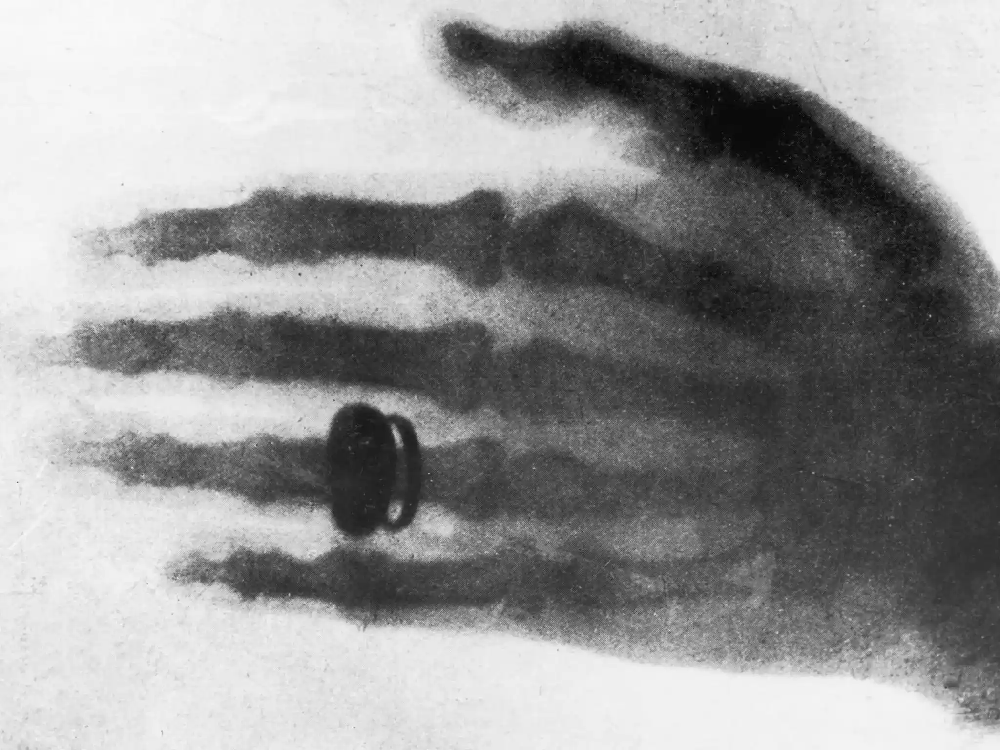
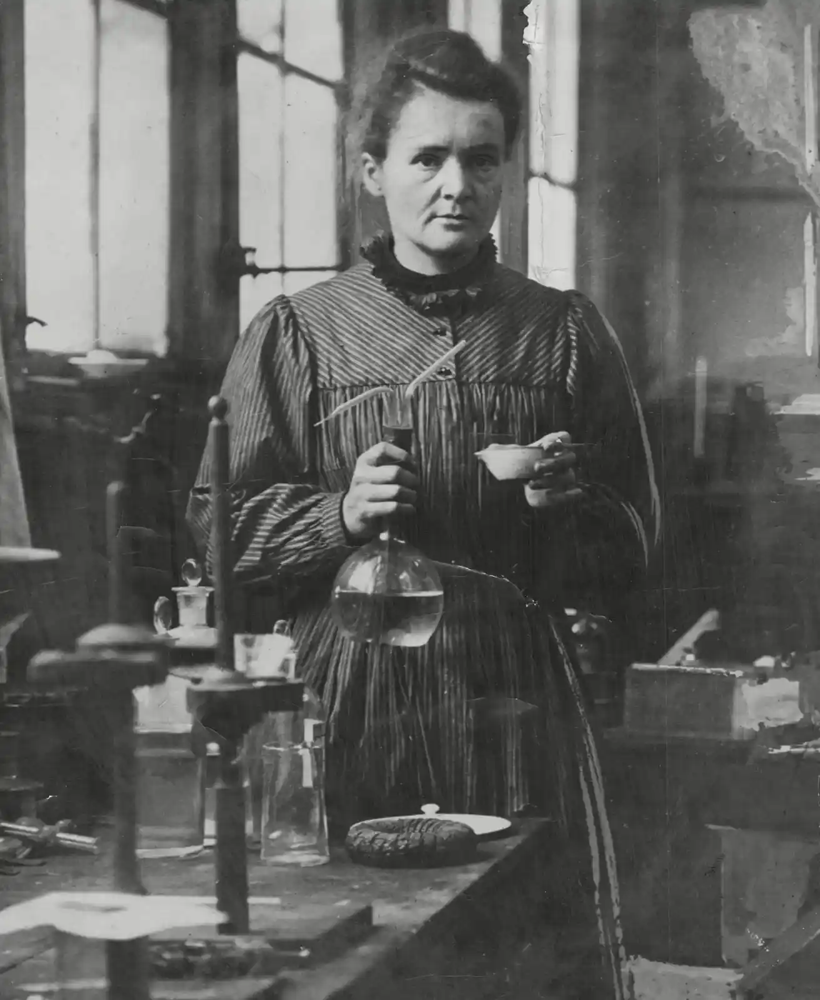
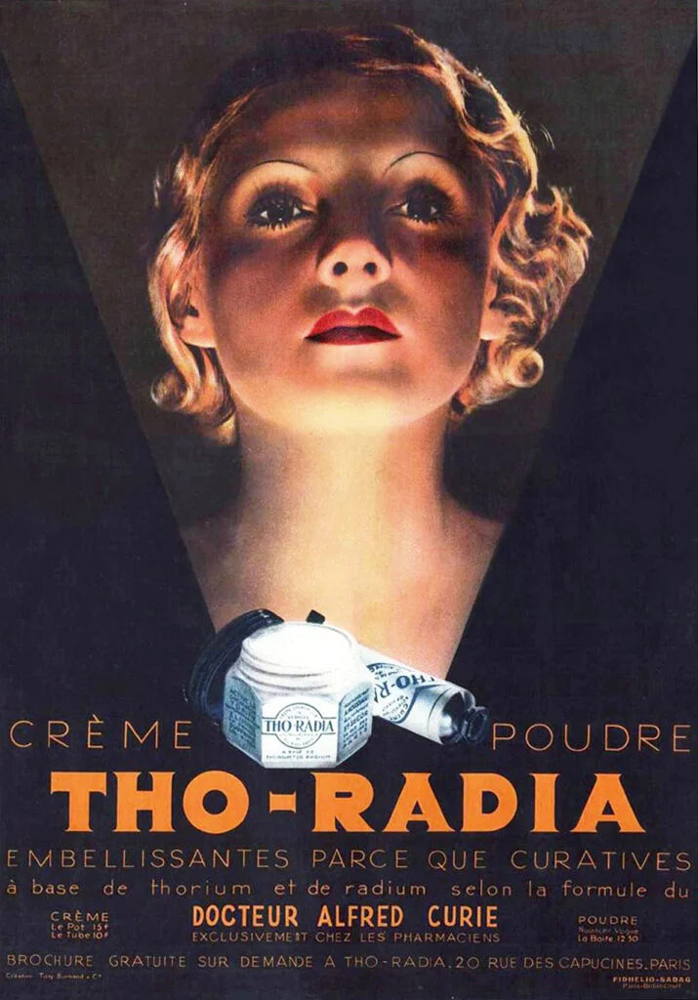
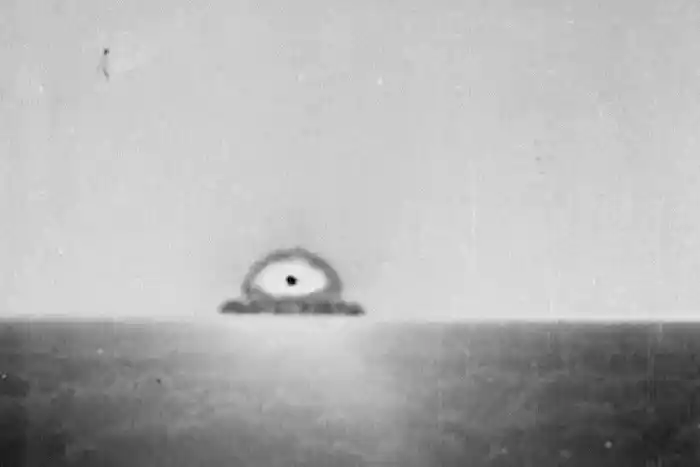

HISTORY
IT STARTED?
Since the dawn of mankind, humans have experienced invisible forces and just took them as they were. Long before
understanding radiation, life alongside naturally radioactive materials was normal.
Cosmic radiation, sunlight, bananas.
Bannanas contain more radiation than most foods

X-ray historical landmark
SEEN
In 1895 Wilhelm Conrad Röntgen discovered
X-rays by experimenting and revealing a radiation that could pass through
soft tissue and expose bones, as photography was already understood to be from light before this.
The invisibility of radiation was literally seen for the first time.
CURIOUS MINDS
From 1896–1903 Henri Becquerel
observed uranium’s miraculous radiation episodes.
Marie Curie
studied it too and coined “radioactivity” as the phenomenon.
Working together in 1898, they both discovered polonium and radium. Marie was unfortunately killed by aplastic anaemia (low blood cell production) which was probably due to her prolonged exposure to radiation, damaging her bone marrow.

Madam Curie working in her lab

Radium girls

Radium beauty products
RAD AGE BEGINS
In the 1900s to 1930s radioactivity became associated with medical treatments, used for scientific progress, glowing consumer products.
People supposed health benefits, but this mistake caused deaths and illnesses like the radium girls, who used it in their makeup or
were exposed to copious amounts in military glow-in-the-dark clock factories.
These flaws exposed radiation dangers changing public attitudes. Radiation was made clear not to be screwed with.
KABOOM
From the 1930s to the end of WW2 in 1945, nuclear fission was worked on and mastered by the Americans, defeating the Nazis and Japanese.
The discovery of the neutron, the Manhattan Project, and culmination of the most brilliant scientific minds saw the emergence of the atomic bomb.
Radiation, once a scientific curiosity, became death, the destroyer of worlds.
Robert J. Oppenheimer, Albert Einstein, and many jewish refugees from europe were credited with the world altering weapon that was used on
Hiroshima and Nagasaki.
To this day, no other country has seen the use of nukes in warfare. Let’s hope it stays that way.

Hiroshima and Nagasaki experienced similar levels of bombs
USSR in the Cold War Arms Race against the United States of America

Arms Race political cartoon
I DON’T WANT TO SET THE WORLD ON FIRE
Post 1940s, the 50s to 1990s saw a terrible Cold War between the USSR and the USA. Nuclear testing skyrocketed especially in places like
Bikini Atoll and Nevada, going from dropper bombs to missiles and precise ICBMs.
The nuclear arms race between the two global superpowers saw the ability to wipe out life on earth as a simple means of pushing a button.
Civil defense, radiation based power plants, radioactive medicine, and major nuclear accidents marked the rapid expansion of technology
from the Cold War drive to innovate.
Even without mutually assured destruction, modern events like Chernobyl nuclear detonation and Fukushima power plant failure saw how devastating
the misshandling of such a powerful energy source could be.